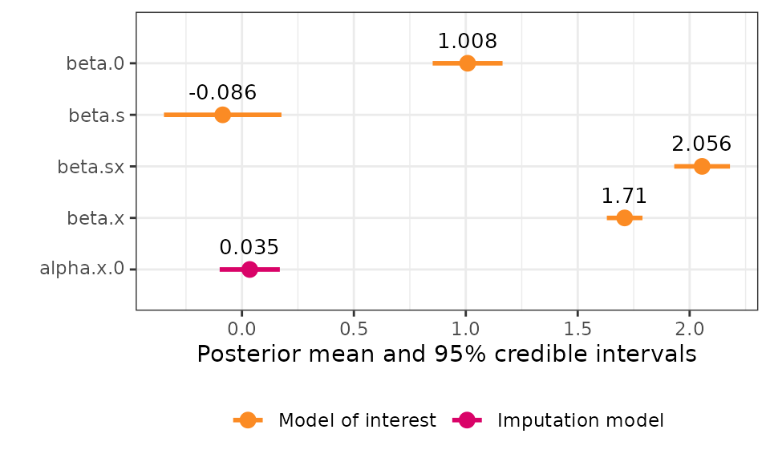

This vignette shows how to fit measurement error and imputation
models using the inlamemi package for a few different
simple simulated data sets. Note that although the data sets describe
realistic situations, they are all completely fictitious, and created
purely to illustrate how to fit models in different situations.
Simple example with missingness and two types of measurement error
| Error types | Likelihood | Response | Covariate with error | Other covariate(s) |
|---|---|---|---|---|
| Berkson, classical, missing values | Gaussian | \(y\) | \(x\) | \(z\) |
This is a simple simulation with Berkson and classical error as well as missing data, to check that the package works as expected in that scenario.
Generating the data
set.seed(2024)
n <- 1000
# Covariate without error:
z <- rnorm(n, mean = 0, sd = 1)
# Berkson error:
u_b <- rnorm(n, sd = 1)
alpha.0 <- 1; alpha.z <- 2
r <- rnorm(n, mean = alpha.0 + alpha.z*z, sd = 1)
x <- r + u_b # Turn off Berkson by commenting out "+ u_b"
# Response:
beta.0 <- 1; beta.x <- 2; beta.z <- 2
y <- beta.0 + beta.x*x + beta.z*z + rnorm(n)
# Classical error:
u_c <- rnorm(n, sd = 1)
x_obs <- r + u_c
# Missingness:
m_pred <- -1.5 - 0.5*z # This gives a mean probability of missing of ca 0.2.
m_prob <- exp(m_pred)/(1 + exp(m_pred))
m_index <- as.logical(rbinom(n, 1, prob = m_prob)) # MAR
# m_index <- sample(1:n, 0.2*n, replace = FALSE) # MCAR
x_obs[m_index] <- NA
simple_data <- data.frame(y = y, x = x_obs, z = z)Fitting the model
# Fit the model
simple_model <- fit_inlamemi(data = simple_data,
formula_moi = y ~ x + z,
formula_imp = x ~ z,
family_moi = "gaussian",
error_type = c("berkson", "classical"),
prior.prec.moi = c(10, 9), # Gamma(10, 9)
prior.prec.berkson = c(10, 9), # Gamma(10, 9)
prior.prec.classical = c(10, 9), # Gamma(10, 9)
prior.prec.imp = c(10, 9), # Gamma(10, 9)
prior.beta.error = c(0, 1/1000), # N(0, 10^3)
initial.prec.moi = 1,
initial.prec.berkson = 1,
initial.prec.classical = 1,
initial.prec.imp = 1)
summary(simple_model)
#> Formula for model of interest:
#> y ~ x + z
#>
#> Formula for imputation model:
#> x ~ z
#>
#> Error types:
#> [1] "berkson" "classical"
#>
#> Fixed effects for model of interest:
#> mean sd 0.025quant 0.5quant 0.975quant mode
#> beta.0 1.025124 0.2179970 0.6019258 1.023122 1.430698 0.9819097
#> beta.z 1.901067 0.3866921 1.1875692 1.884510 2.545321 1.8950489
#>
#> Coefficient for variable with measurement error and/or missingness:
#> mean sd 0.025quant 0.5quant 0.975quant mode
#> beta.x 1.973204 0.1968908 1.575527 1.976612 2.350586 1.991371
#>
#> Fixed effects for imputation model:
#> mean sd 0.025quant 0.5quant 0.975quant mode
#> alpha.x.0 1.033077 0.05059573 0.9338185 1.033085 1.132292 1.033085
#> alpha.x.z 2.024714 0.05225779 1.9222654 2.024697 2.127258 2.024697
#>
#> Model hyperparameters (apart from beta.x):
#> mean sd 0.025quant 0.5quant
#> Precision for model of interest 1.1345962 0.3643423 0.5735060 1.0832656
#> Precision for x berkson model 1.1285513 0.3323111 0.6007509 1.0867082
#> Precision for x classical model 0.9242220 0.1059859 0.7364038 0.9171206
#> Precision for x imp model 0.9791429 0.1230440 0.7560575 0.9726063
#> 0.975quant mode
#> Precision for model of interest 1.992009 0.9884706
#> Precision for x berkson model 1.896754 1.0102841
#> Precision for x classical model 1.153173 0.9009605
#> Precision for x imp model 1.239668 0.9618046
simple.truth <- tibble::tribble(
~"variable", ~"value",
"beta.x", beta.x,
"beta.z", beta.z,
# "beta.0", beta.0,
"alpha.x.z", alpha.z,
# "alpha.0", alpha.0
)
plot(simple_model, plot_intercepts = FALSE) +
geom_point(data = simple.truth, aes(x = value))
Missing data only
| Error types | Likelihood | Response | Covariate with error | Other covariate(s) |
|---|---|---|---|---|
| Missing values | Gaussian | \(y\) | \(x\) | \(z\) |
In this example, we have missingness in one covariate, but no other measurement error, so this shows how to do simple imputation of a missing covariate in R-INLA.
Generating the data
set.seed(2024)
n <- 1000
# Covariate without missingness:
z <- rnorm(n, mean = 0, sd = 1)
# Covariate that will have missingness:
alpha.0 <- 1; alpha.z <- 2
x <- rnorm(n, mean = alpha.0 + alpha.z*z, sd = 1)
# Response:
beta.0 <- 1; beta.x <- 2; beta.z <- 2
y <- beta.0 + beta.x*x + beta.z*z + rnorm(n)
# Missingness:
m_pred <- -1.5 - 0.5*z # This gives a mean probability of missing of ca 0.2.
m_prob <- exp(m_pred)/(1 + exp(m_pred))
m_index <- as.logical(rbinom(n, 1, prob = m_prob)) # MAR
# m_index <- sample(1:n, 0.2*n, replace = FALSE) # MCAR
x_obs <- x
x_obs[m_index] <- NA
missing_data <- data.frame(y = y, x = x_obs, z = z)Model without imputation
naive_model <- inla(formula = y ~ x + z, family = "gaussian", data = missing_data)
naive_model$summary.fixed
#> mean sd 0.025quant 0.5quant 0.975quant mode
#> (Intercept) 2.059952 0.07313492 1.9165113 2.059952 2.203392 2.059952
#> x 1.060038 0.04847764 0.9649586 1.060038 1.155118 1.060038
#> z 4.242952 0.09766027 4.0514099 4.242952 4.434494 4.242952
#> kld
#> (Intercept) 1.017087e-11
#> x 1.020428e-11
#> z 1.015061e-11
naive_model$summary.hyperpar
#> mean sd 0.025quant
#> Precision for the Gaussian observations 0.3082829 0.01379352 0.2818484
#> 0.5quant 0.975quant mode
#> Precision for the Gaussian observations 0.308078 0.3359021 0.3076677Model with imputation
missing_model <- fit_inlamemi(formula_moi = y ~ x + z,
formula_imp = x ~ z,
family_moi = "gaussian",
data = missing_data,
error_type = "missing",
prior.prec.moi = c(2, 1),
prior.prec.imp = c(2, 1),
prior.beta.error = c(0, 1/1000),
initial.prec.moi = 1,
initial.prec.imp = 1)
summary(missing_model)
#> Formula for model of interest:
#> y ~ x + z
#>
#> Formula for imputation model:
#> x ~ z
#>
#> Error types:
#> [1] "missing"
#>
#> Fixed effects for model of interest:
#> mean sd 0.025quant 0.5quant 0.975quant mode
#> beta.0 0.9745225 0.04845205 0.8803587 0.9745783 1.068505 0.9746223
#> beta.z 1.9452318 0.07611274 1.7999548 1.9454477 2.089942 1.9455044
#>
#> Coefficient for variable with measurement error and/or missingness:
#> mean sd 0.025quant 0.5quant 0.975quant mode
#> beta.x 2.024688 0.03436286 1.957148 2.024651 2.092447 2.024496
#>
#> Fixed effects for imputation model:
#> mean sd 0.025quant 0.5quant 0.975quant mode
#> alpha.x.0 1.031097 0.03138216 0.9695564 1.031094 1.092657 1.031094
#> alpha.x.z 1.983402 0.03208410 1.9204734 1.983403 2.046327 1.983403
#>
#> Model hyperparameters (apart from beta.x):
#> mean sd 0.025quant 0.5quant
#> Precision for model of interest 1.055858 0.05223329 0.9565990 1.054625
#> Precision for x classical model 1.143310 0.36272948 0.6256221 1.080232
#> Precision for x imp model 1.066530 0.04974618 0.9721810 1.065292
#> 0.975quant mode
#> Precision for model of interest 1.162207 1.0522870
#> Precision for x classical model 2.034936 0.9557842
#> Precision for x imp model 1.168007 1.0626567
missing_truth <- tibble::tribble(
~"variable", ~"value",
"beta.0", beta.0,
"beta.x", beta.x,
"beta.z", beta.z,
"alpha.x.0", alpha.0,
"alpha.x.z", alpha.z
)
plot(missing_model) +
geom_point(data = missing_truth, aes(x = value))Random effect in the main model
| Error types | Likelihood | Response | Covariate with error | Other covariate(s) |
|---|---|---|---|---|
| Classical | Gaussian | \(y\) | \(x\) | \(z\), random effect \(w\) |
In this example, we simulate data that is grouped in such a way that it should be modelled with a random effect in the model of interest.
Generating the data
m <- 10 # number of groups
n <- 100 # number of observations per group
N <- m*n # total number of observations
sd_y <- 3 # sd for the noise
sd_w <- 2 # sd for random effect
sd_x <- 2 # sd for covariate without error
sd_u <- 1 # sd for measurement error
# Covariate without error
z <- rnorm(N, 0, 2)
# Covariate with error
x <- rnorm(N, 0, sd_x) # Independent of z, but can change that here
x_obs <- x + rnorm(N, 0, sd_u)
# Random effect
w_per_group <- rnorm(m, 0, sd_w)
w <- rep(w_per_group, each = n)
# Response
y <- 1 + 2*x + 2*z + w + rnorm(N, 0, sd_y)
reff_data <- data.frame(y = y, id = rep(1:m, each = n), x = x_obs, z = z)Fitting the model
Firstly, if we ignored the measurement error, we might fit a model like this:
naive_model <- inla(y ~ x + z + f(id, model = "iid"),
data = reff_data,
family = "gaussian")
summary(naive_model)
#> Time used:
#> Pre = 0.217, Running = 0.2, Post = 0.0155, Total = 0.433
#> Fixed effects:
#> mean sd 0.025quant 0.5quant 0.975quant mode kld
#> (Intercept) -0.316 0.560 -1.429 -0.316 0.796 -0.316 0
#> x 1.682 0.051 1.582 1.682 1.782 1.682 0
#> z 2.022 0.058 1.908 2.022 2.136 2.022 0
#>
#> Random effects:
#> Name Model
#> id IID model
#>
#> Model hyperparameters:
#> mean sd 0.025quant 0.5quant
#> Precision for the Gaussian observations 0.077 0.003 0.070 0.077
#> Precision for id 0.401 0.184 0.145 0.367
#> 0.975quant mode
#> Precision for the Gaussian observations 0.084 0.077
#> Precision for id 0.852 0.305
#>
#> Marginal log-Likelihood: -2756.06
#> is computed
#> Posterior summaries for the linear predictor and the fitted values are computed
#> (Posterior marginals needs also 'control.compute=list(return.marginals.predictor=TRUE)')
# curve(dgamma(x, shape = 1.5, rate = 2), to = 2)
reff_model <- fit_inlamemi(formula_moi = y ~ x + z +
f(id, model = "iid", hyper = list(prec = list(initial = -15, param = c(2, 2)))),
formula_imp = x ~ 1,
family_moi = "gaussian",
error_type = "classical",
data = reff_data,
initial.prec.moi = 1/4,
initial.prec.classical = 1,
initial.prec.imp = 1/4,
prior.prec.moi = c(1, 4),
prior.prec.classical = c(10, 10),
prior.prec.imp = c(1, 4),
prior.beta.error = c(0, 1/1000))
summary(reff_model)
#> Formula for model of interest:
#> y ~ x + z + f(id, model = "iid", hyper = list(prec = list(initial = -15,
#> param = c(2, 2))))
#>
#> Formula for imputation model:
#> x ~ 1
#>
#> Error types:
#> [1] "classical"
#>
#> Fixed effects for model of interest:
#> mean sd 0.025quant 0.5quant 0.975quant mode
#> beta.0 -0.3650244 0.55215450 -1.464565 -0.3652998 0.7359604 -0.3652915
#> beta.z 2.0221739 0.05796842 1.908472 2.0221773 2.1358570 2.0221774
#>
#> Coefficient for variable with measurement error and/or missingness:
#> mean sd 0.025quant 0.5quant 0.975quant mode
#> beta.x 2.129044 0.1845558 1.77551 2.125784 2.502002 2.111649
#>
#> Fixed effects for imputation model:
#> mean sd 0.025quant 0.5quant 0.975quant mode
#> alpha.x.0 0.1022765 0.07113361 -0.03723484 0.1022765 0.2417878 0.1022765
#>
#> Model hyperparameters (apart from beta.x):
#> mean sd 0.025quant 0.5quant
#> Precision for model of interest 0.1097623 0.01879821 0.07832672 0.1078878
#> Precision for x classical model 0.9944952 0.32137045 0.49380790 0.9510102
#> Precision for x imp model 0.2514882 0.02489416 0.20702558 0.2499385
#> Precision for id 0.4183687 0.18197422 0.17074640 0.3831571
#> 0.975quant mode
#> Precision for model of interest 0.1521113 0.1037395
#> Precision for x classical model 1.7446237 0.8713610
#> Precision for x imp model 0.3049471 0.2461984
#> Precision for id 0.8722803 0.3217475
reff.truth <- tibble::tribble(
~"variable", ~"value",
"beta.x", 2,
"beta.z", 2,
"beta.0", 1,
"alpha.x.0", 0
)
plot(reff_model) +
geom_point(data = reff.truth, aes(x = value))
Interaction effect with error variable
| Error types | Likelihood | Response | Covariate with error | Other covariate(s) |
|---|---|---|---|---|
| Classical | Gaussian | \(y\) | \(x\) | categorical variable \(s\), interaction effect \(x:s\) |
Interaction effects between the error prone variable and an (assumed)
error-free variable can also be used. The syntax is as normal, an
interaction effect between variables x and s
would be specified in the formula for the model of interest as
x:s.
Generating the data
set.seed(2024)
n <- 1000
# Covariate without error:
s <- c(rep(0, n/2), rep(1, n/2))
# Classical error:
x <- rnorm(n, mean = 0, sd = 2)
u_c <- rnorm(n, sd = 1)
x_obs <- x + u_c
# Response:
beta.0 <- 1; beta.x.s <- 2
y <- beta.0 + beta.x*x + beta.x.s*x_obs*s + rnorm(n)
interact_data <- data.frame(y = y, x = x_obs, z = z, s = s)Fitting the model
interact_model <- fit_inlamemi(formula_moi = y ~ x:s,
formula_imp = x ~ 1,
family_moi = "gaussian",
data = interact_data,
error_type = "classical",
prior.beta.error = c(0, 0.01),
prior.prec.moi = c(10, 9),
prior.prec.classical = c(10, 9),
prior.prec.imp = c(10, 8),
initial.prec.moi = 1,
initial.prec.classical = 1,
initial.prec.imp = 2)
summary(interact_model)
#> Formula for model of interest:
#> y ~ x:s
#>
#> Formula for imputation model:
#> x ~ 1
#>
#> Error types:
#> [1] "classical"
#>
#> Fixed effects for model of interest:
#> mean sd 0.025quant 0.5quant 0.975quant mode
#> beta.0 1.00822024 0.0795808 0.8521157 1.0082235 1.1643067 1.00822353
#> beta.s -0.08611257 0.1337826 -0.3485173 -0.0861079 0.1762656 -0.08610788
#>
#> Coefficient for variable with measurement error and/or missingness:
#> mean sd 0.025quant 0.5quant 0.975quant mode
#> beta.sx 2.055320 0.06323712 1.929902 2.055636 2.178888 2.056958
#> beta.x 1.709039 0.04040998 1.630153 1.708811 1.789261 1.707856
#>
#> Fixed effects for imputation model:
#> mean sd 0.025quant 0.5quant 0.975quant mode
#> alpha.x.0 0.03481148 0.06851004 -0.09955761 0.03481148 0.1691806 0.03481148
#>
#> Model hyperparameters (apart from beta.sx, beta.x):
#> mean sd 0.025quant 0.5quant
#> Precision for model of interest 0.4106497 0.03317963 0.3493261 0.4092767
#> Precision for x classical model 4.0989139 0.43977507 3.2954662 4.0775941
#> Precision for x imp model 0.2253193 0.01059275 0.2051478 0.2250837
#> 0.975quant mode
#> Precision for model of interest 0.4798788 0.4064688
#> Precision for x classical model 5.0248427 4.0394134
#> Precision for x imp model 0.2468454 0.2246416
plot(interact_model)
Logistic regression with classical error and missing data
| Error types | Likelihood | Response | Covariate with error | Other covariate(s) |
|---|---|---|---|---|
| Classical, missing | Binomial | \(y\) | \(w\) | \(z\) |
Here we show how to fit a logistic regression model.
set.seed(1)
nn <- 1000
z <- rbinom(nn, 1, 0.5)
x <- rnorm(nn, 1-0.5*z, 1)
# Error
w <- x + rnorm(nn, 0, 1)
# Generating missing data, depending on z
eta <- -1 + z
prob_missing <- exp(eta)/(1 + exp(eta))
missing_index <- rbinom(nn, 1, prob_missing)
# Proportion missing:
sum(missing_index)/nn
#> [1] 0.393
# Replace the values in w by missing in case the index for missingness is =1:
w <- ifelse(missing_index==1, NA, w)
# Generate binomial response
eta <- x + z
prob <- exp(eta)/(1 + exp(eta))
y <- rbinom(nn, 1, prob)
data_binom <- data.frame(x = x, z = z, y = y, w = w)Modeling error and missing data:
model_binom <- fit_inlamemi(data = data_binom,
formula_moi = y ~ w + z,
formula_imp = w ~ z,
formula_mis = m ~ z,
family_moi = "binomial",
error_type = c("classical","missing"),
prior.prec.classical = c(10, 9),
prior.prec.imp = c(10, 9),
prior.beta.error = c(0, 1/1000),
initial.prec.classical = 2,
initial.prec.imp = 1)
summary(model_binom)
plot(model_binom)Poisson regression with classical error and missing data
| Error types | Likelihood | Response | Covariate with error | Other covariate(s) |
|---|---|---|---|---|
| Classical, missing | Poisson | \(y\) | \(w\) | \(z\) |
Here we show how to fit a Poisson regression model, where the model of interest has a random intercept term.
set.seed(1)
nn <- 1000
z <- rbinom(nn, 1, 0.5)
x <- rnorm(nn, 1-0.5*z, 1)
# Error
w <- x + rnorm(nn, 0, 1)
# Generating missing data, depending on z
eta <- -1 + z
prob_missing <- exp(eta)/(1 + exp(eta))
missing_index <- rbinom(nn, 1, prob_missing)
# Proportion missing:
sum(missing_index)/nn
#> [1] 0.393
# Replace the values in w by missing in case the index for missingness is =1:
w <- ifelse(missing_index==1, NA, w)
# Random effect to include in the regression model:
re <- rep(rnorm(nn/20), each = 20)
# Linear predictor
eta <- x + z + re
# Generate Poisson response
y <- rpois(nn, exp(eta))
data_pois <- data.frame(x = x, z = z, y = y, w = w, id = rep(seq(1:50), each = 20))Simple regression models with correct and error-prone variables to check the effect:
library(lme4)
summary(glmer(y ~ x + z + (1|id), data = data_pois, family="poisson"))$coef
summary(glmer(y ~ w + z + (1|id), data = data_pois, family="poisson"))$coefModeling error and missing data:
model_pois <- fit_inlamemi(data = data_pois,
formula_moi = y ~ w + z + f(id,model="iid"),
formula_imp = w ~ z,
formula_mis = m ~ z,
family_moi = "poisson",
error_type = c("classical","missing"),
prior.prec.classical = c(19, 9),
prior.prec.imp = c(10, 9),
prior.beta.error = c(0, 1/1000),
initial.prec.classical = 2,
initial.prec.imp = 1)
summary(model_pois)
plot(model_pois)